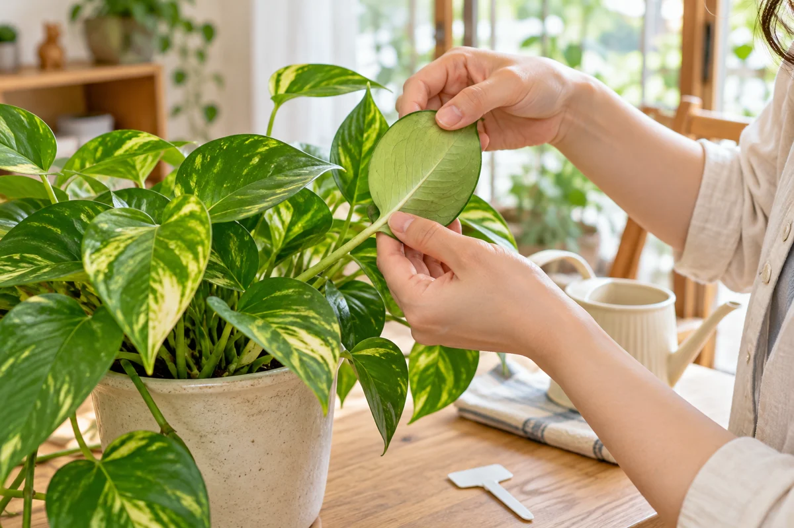
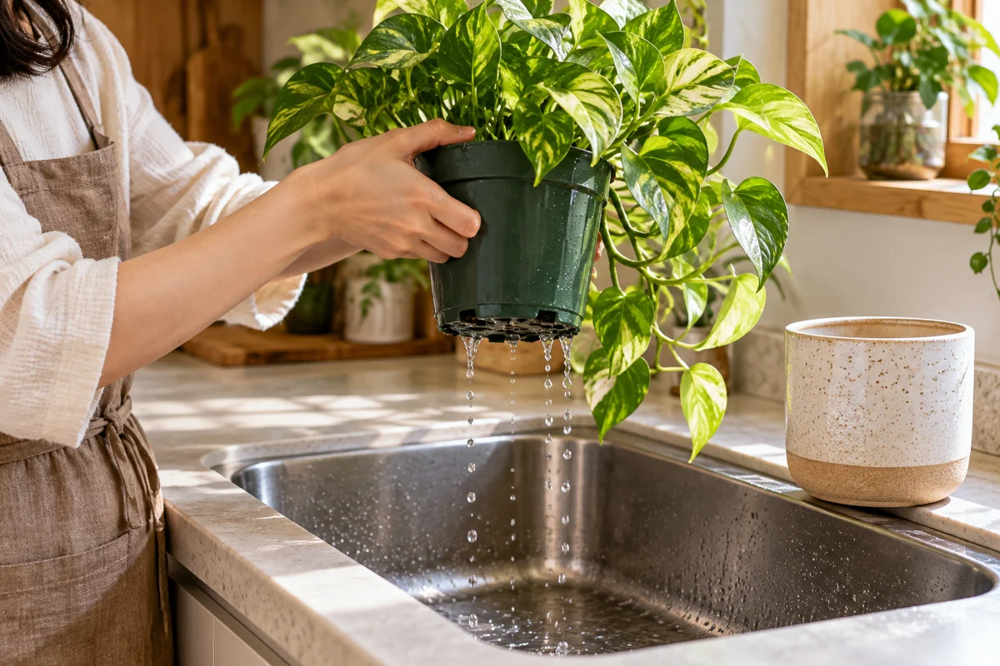

今日やることは、この3つ
- ラベルを残し、葉裏と株元を見て、最初の写真を撮る。
- 土の湿り気を確認。水やりは購入日ではなく鉢の状態で決める。
- 種類に合う明るさと温度を確保し、ほかの鉢とは離して様子を見る。
水やりや写真を記録して変化を振り返りたい方へ。RELOHAでできることを見る ↓
① まず、ラベルと葉裏を見る
植物名が分かるラベルは捨てずに撮影。葉裏・茎の付け根・鉢の周りに虫や気になる跡がないか見ます。新しい鉢は、見逃した虫などを広げないため、ほかの植物と離して2〜3週間ほど観察する方法が紹介されています。期間が過ぎれば無条件に安全、という意味ではありません。［1］

② 「買った日だから水やり」はしない
お店で水をもらった直後かもしれません。土の表面だけでなく、中の湿り気と持てる鉢なら重さも確認します。必要な乾き方は種類で違うので、ラベルや購入店の案内を基準に。［2］
用土と鉢底穴のある一般的な観葉植物で、水が必要なら用土へゆっくり与え、排水してから戻します。受け皿や鉢カバーに残った水は捨てましょう。［2］

③ 肥料と植え替えは、急がなくていい
新しい環境に慣れる間は、肥料を急いで足さないようにします。置き場所は種類に合う明るさを選び、冷たい窓ガラスや冷暖房の直風を避けます。［1］［3］
| まずする | 状態を見て決める |
|---|---|
| 名前・葉裏・土・排水の確認 | 水やりと肥料の追加 |
| 種類に合う置き場所を用意 | 元気な株の植え替え |
| 最初の写真を一枚 | 大きな鉢へのサイズ変更 |
見た目を替えたいだけなら、排水を確認できる鉢カバーも選択肢。鉢が壊れている、排水できない、株元が傷んでいるなどの問題があれば、ただ待つのではなく購入店へ相談を。植え替えの目安は根と鉢サイズの確認ガイドへ。
最後に「うちに来た日」を一枚
全体の写真に「購入日・置き場所・土が湿っていたか」を短く添えれば十分。後で葉が変わったとき、最初の姿と比べられます。最初から完璧な管理表を作る必要はありません。
よくある質問
すぐ好きな鉢に植え替えてもいい？
元気で排水に問題がなければ、まず環境と根の状態を確認してからで大丈夫。見た目だけなら鉢カバーも選べます。
少し葉が落ちたら、肥料を足す？
環境変化でも落葉は起こりますが、それだけで原因は決まりません。土や温度、虫の有無を確認し、肥料を回復薬のように足さないでください。
別の部屋がない場合は？
できる範囲で鉢を離し、葉が触れない配置で観察します。道具や手を介して広げないよう注意し、異常が見つかれば購入店へ相談してください。
参考情報と編集方針
大学の公開情報を確認し、RELOHA編集部が初心者向けの手順にまとめました。写真は実践結果ではなくAI生成のイメージです。種類ごとの管理は購入店やラベルの案内を優先してください。
- イリノイ大学：新しい観葉植物を迎えたらラベル・虫の確認、2〜3週間の隔離観察、新環境への適応と肥料
- メリーランド大学：室内植物の水やり日数に固定しない乾湿の判断、鉢の重さ、排水
- イリノイ大学：観葉植物のお世話冷たい窓ガラス、冷暖房の風と温度変化への注意
確認日：2026年10月30日。海外の季節や室温を日本へ一律に当てはめていません。RELOHAを運営する編集部による自社記事です。